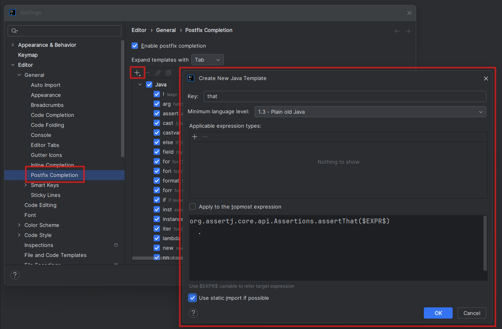

IntelliJ's Postfix Completion Templates
Published: June 30, 2026
We can use IntelliJ IDEA's postfix completion feature to quickly write our favorite code patterns.
For instance, instead of typing assertThat(foo),
we can type foo.that and let the IDE complete it.
PS: this only works for those who are still handcrafting code!
Let's do it, there are only a few simple steps:
- Navigate to Settings → Editor → General → Postfix Completion.
- Make sure "Enable postfix completion" is checked.
- Click the plus icon to create a new template.
- Enter a key ("that" - for our specific example),
- Define the template body using $EXPR$ as a placeholder for the expression.

As we can see, we checked the "use static imports" setting
and introduced the template that wraps the $EXPR$ placeholder
within an Assertj assertion:
org.assertj.core.api.Assertions.assertThat($EXPR$)
.
Now, we can simply use .that on any object or reference
to quickly wrap it within an AssertJ assertion: